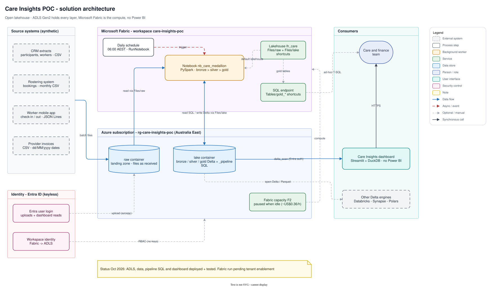
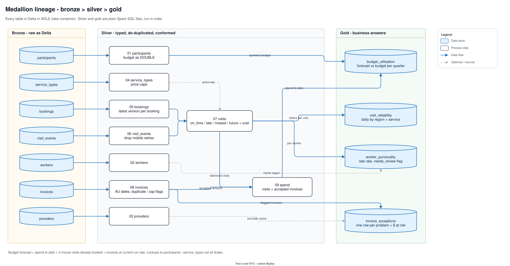
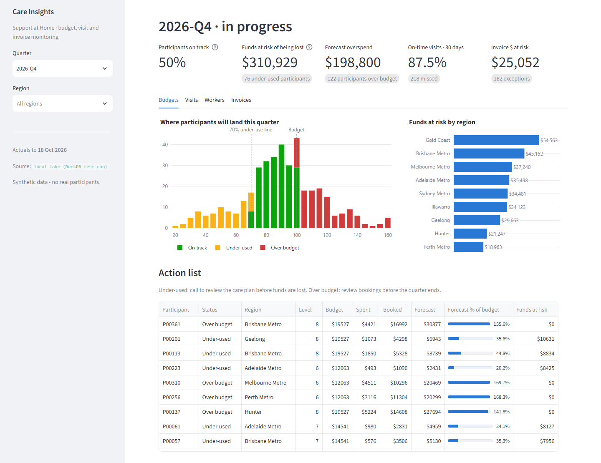
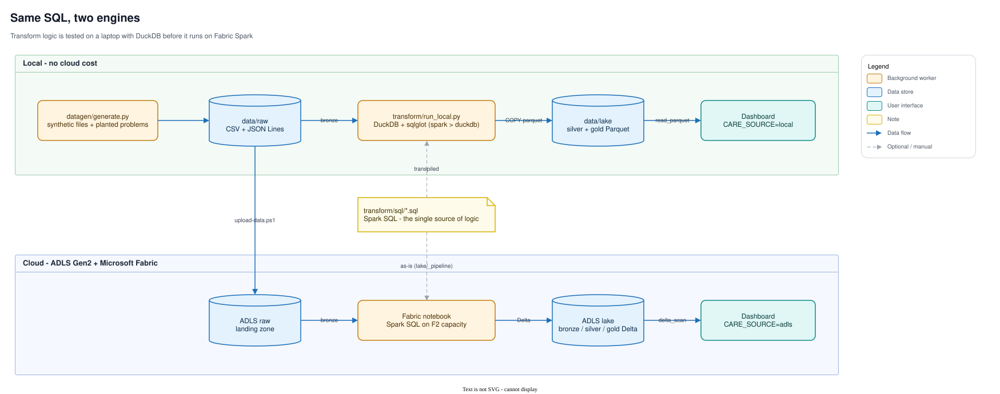
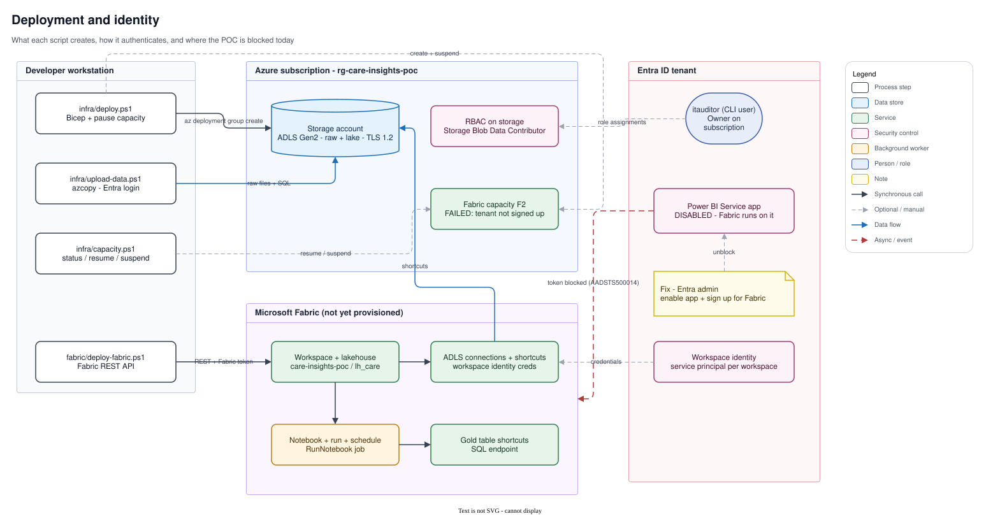

Find the budget, visit and invoice problems while there's still time to fix them.
An open lakehouse for home-care providers. Rostering, the worker mobile app and provider invoices land in Azure Data Lake Storage; Microsoft Fabric runs a bronze → silver → gold pipeline over them every morning; a code-first dashboard shows who will under-use or overspend their quarterly budget, which visits are being missed, and which invoices shouldn't be paid as-is.

- Sources: CRM, rostering, mobile app, provider invoices
- ADLS raw: files as received
- Fabric: Spark notebook, compute only
- ADLS lake: Delta bronze / silver / gold
- Consumers: dashboard, SQL endpoint, any Delta reader
1. The problem: found too late
Under Support at Home, each participant has a quarterly budget. Unspent money above the carry-over limit is lost to the participant, and overspend has to be absorbed or clawed back. Both are usually discovered after the quarter closes, when nothing can be done. The same data also hides missed and late visits and errors in third-party provider invoices.
Approach. Join the three systems that each hold part of the picture (rostering, the worker app's check-ins and provider invoices) into one lakehouse, and answer four questions every morning. The budget forecast isn't a straight line: it's spend to date + in-house visits already booked for the rest of the quarter + provider invoices at their current run rate.
| Question | Gold table | What the POC found (synthetic data) |
|---|---|---|
| Who will under-use or overspend their budget this quarter? | gold_budget_utilisation | 76 participants under-used, ~$311k at risk of being lost; 122 forecast over budget |
| Are visits happening, and on time? | gold_visit_reliability | 87.5% on time over the last 30 days; 218 missed |
| Which workers or rosters are consistently late? | gold_worker_punctuality | All 4 planted chronically-late workers flagged |
| Which provider invoices should not be paid as-is? | gold_invoice_exceptions | 52 duplicates, 124 above price cap (top offender PRV004), 6 unknown participants |
For scale: in the quarter that just closed, the same rule estimates $366k was lost to participants. The difference this time is that the $311k is flagged in October, with ten weeks left to act.
2. An open lakehouse: ADLS stores, Fabric computes
Approach. Azure Data Lake Storage Gen2 is the system of record. Every layer (raw files, then bronze, silver and gold Delta tables) lives in your own storage account. Fabric reaches it through OneLake shortcuts and does the compute. Pause or remove Fabric and nothing is lost, and Databricks, Synapse, DuckDB or Polars can read the same tables.
What's in it
- ADLS Gen2 (hierarchical namespace, TLS 1.2, no public blob access), Australia East, with two containers:
raw(landing zone, files as received) andlake(Delta tables plus the pipeline SQL). - Fabric F2 capacity, created paused and resumed only for runs. Workspace, lakehouse
lh_care, notebooknb_care_medallion, daily 06:00 AEST schedule. - OneLake shortcuts:
Files/rawandFiles/lakepoint at ADLS.Tables/gold_*shortcuts expose gold to the Fabric SQL endpoint without copying data. - No Power BI. The dashboard is a Streamlit app querying gold Delta directly with DuckDB, signed in with Entra ID.
- Data stays onshore: storage and capacity both in Australia East.

Demonstrable artifacts
infra/main.bicep: storage account, containers, RBAC and the (optional) Fabric capacityinfra/deploy.ps1: deploys the Bicep and pauses the capacity immediatelyinfra/upload-data.ps1: lands raw files and pipeline SQL with an Entra login, with no keysfabric/deploy-fabric.ps1: Fabric REST API for the workspace, lakehouse, connections, shortcuts, notebook, run and schedule
3. Medallion pipeline, checked against a known answer
Approach. The transform logic is plain Spark SQL files in transform/sql, run in order. Bronze keeps raw data as Delta. Silver cleans it: AU dd/MM/yyyy dates, de-duplicated app events, check-ins matched to bookings. Gold answers the four questions. The synthetic generator plants specific problems, and the gold tables are checked against them.

- Raw: 124 CSV / JSONL files
- Bronze: 7 tables, as received
- Silver: 9 cleaned, conformed tables
- Gold: 4 tables, one per question
- Answers: budgets, visits, workers, invoices
Planted problem → did the pipeline find it?
| Planted in the source data | Found in gold | Result |
|---|---|---|
| 4 chronically-late workers (W0016, W0018, W0033, W0043) | Top 4 by late rate, all flagged needs review | Found |
| ~4% of visits missed | Missed rate per worker and per day ≈ 4% | Found |
| Provider PRV004 billing above the price cap | Top above-cap offender by $ at risk | Found |
| 1.5% duplicate invoices, 6 invoices for unknown participants | 52 duplicates and 6 unknown participants in invoice exceptions | Found |
| 1% duplicate app events, 2% missing check-outs, AU date formats | De-duplicated and parsed in silver; missing check-outs counted per visit | Handled |
The forecast, in the SQL itself
-- transform/sql/gold/01_budget_utilisation.sql (excerpt)
visit_spend_aud + invoice_spend_aud + booked_aud
+ invoice_spend_aud / days_elapsed * (days_in_quarter - days_elapsed) AS forecast_spend_aud
...
CASE
WHEN forecast_spend_aud > budget_aud THEN 'Over budget'
WHEN forecast_spend_aud < 0.7 * budget_aud THEN 'Under-used'
ELSE 'On track'
END AS budget_status,
-- illustrative carry-over: unspent funds up to the greater of $1,000 or 10% of budget
GREATEST(budget_aud - forecast_spend_aud - GREATEST(1000.0, 0.1 * budget_aud), 0.0) AS est_funds_lost_aud
Demonstrable artifacts
datagen/generate.py: synthetic source files with the planted problems (seeded, standard library only)transform/bronze_sources.json: which raw paths load into which bronze tabletransform/sql/silver: 9 cleaning and conforming stepstransform/sql/gold: the 4 gold tables, one per questionfabric/nb_care_medallion.py: the Fabric notebook (Git source format) that runs the SQL on Spark
4. Interactive demo: the gold tables
Approach. These charts are drawn in your browser from the pipeline's actual gold output (exported to a small JSON file, as of 18 Oct 2026). Pick a region; hover any mark for its numbers. The production dashboard is the Streamlit app further down, which queries the same tables live with DuckDB.
Where participants will land this quarter
Participants by forecast spend, % of budget (2026-Q4)
Funds at risk of being lost, by region
Estimated, above the carry-over limit
Action list
Under-used: call to review the care plan before funds are lost. Over budget: review bookings before the quarter ends.
On-time visit rate
Share of scheduled visits delivered on time, 7-day rolling
Missed visits per day
Scheduled but never checked in
Late rate by worker
Top 15 by share of visits started more than 15 minutes late; dashed line = 20% review threshold
$ at risk by provider
Top 8 providers, stacked by exception type
Exceptions by type
Count and $ held back
Invoices aren't tied to a region, so the region filter doesn't apply here.
gold_* tables from the DuckDB test run of the same SQL the Fabric notebook runs. Synthetic data.The production dashboard: Streamlit + DuckDB
A code-first app (app/dashboard.py) with KPI tiles, the budget distribution, funds at risk by region and a ranked action list, plus Visits, Workers and Invoices tabs. With CARE_SOURCE=adls it reads gold Delta straight from ADLS (delta_scan('abfss://lake@…/gold/…')) using the viewer's Entra login, with no gateway, extract or refresh schedule.

5. Same SQL, two engines: test on a laptop, run on Fabric
Approach. The Spark SQL files are the single source of transform logic. In Fabric, the notebook reads them from lake/_pipeline/sql and runs them on Spark. On a laptop, transform/run_local.py transpiles the same files to DuckDB with sqlglot and runs them in seconds, with no cloud cost, before anything ships.

- transform/sql: 13 Spark SQL files
- Laptop: sqlglot → DuckDB, all 13 steps in ~1 second
- Local Parquet: for testing and review
- Fabric Spark: notebook, scheduled daily
- ADLS lake: Delta, the system of record
# transform/run_local.py (core loop)
for f in sorted((SQL / layer).glob("*.sql")):
spark_sql = f.read_text().replace("{{AS_OF_DATE}}", a.as_of)
duck_sql = sqlglot.transpile(spark_sql, read="spark", write="duckdb")[0]
...
con.execute(f"COPY {table} TO '{out.as_posix()}' (FORMAT parquet)")Two portability lessons are now in the SQL: use TIMESTAMPDIFF(SECOND, …) rather than UNIX_TIMESTAMP arithmetic, and wrap date-plus-interval in CAST(… AS DATE), because DuckDB returns a timestamp there.

Demonstrable artifacts
transform/run_local.py: transpiles and runs every step on DuckDB, writing Parquettransform/sql: the single source of transform logic, shared by both enginesfabric/nb_care_medallion.py: the Spark side, reading the same files fromlake/_pipeline/sql
6. Keyless identity, and an honest status
Approach. Everything authenticates with Entra ID. People upload data and read the dashboard with their own login (az login, then DuckDB's credential_chain). Fabric reaches ADLS with its workspace identity, granted Storage Blob Data Contributor through RBAC. Account keys exist only as a fallback flag (-AuthMode Key).

- You: Entra sign-in, no keys
- Entra ID: issues tokens, RBAC on storage
- ADLS: upload and read working
- Dashboard: DuckDB → ADLS verified
- Fabric: token refused pending
Where it's up to
| Piece | Status |
|---|---|
| Resource group, ADLS Gen2 account (Australia East) | Deployed |
Synthetic data in raw/ (124 files), pipeline SQL in lake/_pipeline/ | Uploaded |
| All 13 SQL steps + dashboard; DuckDB → ADLS Entra auth | Tested |
| Fabric capacity, workspace, notebook run | Scripted; waiting on tenant enablement |
The Fabric run is waiting on one tenant-level switch. Fabric depends on the Power BI Service enterprise app (even though this design uses no Power BI reports), and in the test tenant that app is disabled. An Entra administrator enables it, someone signs in once at app.fabric.microsoft.com, and fabric/deploy-fabric.ps1 -Schedule does the rest. Workspace creation can stay locked down to named people in Fabric's tenant settings.

Demonstrable artifacts
infra/main.bicep: RBAC role assignment for the deploying user; storage with public blob access offfabric/deploy-fabric.ps1: provisions the workspace identity, grants it storage RBAC, creates the ADLS connectionsapp/dashboard.py: DuckDBcredential_chainwith the Azure CLI login, no stored keysinfra/capacity.ps1:status/resume/suspendthe capacity
7. What it can be used for
The POC answers four questions for one program, but its parts are general: land files from systems you don't control, keep them in your own storage, clean them with SQL you can test on a laptop, and put a ranked action list in front of the people who can act on it.
Budget conversations before quarter end
A weekly list of participants heading for under-use (funds at risk) or overspend, ranked by dollars, with the bookings already in the diary.
Missed and late visits
On-time rate by region and service, plus workers or rosters that are consistently late, so the fix is a roster change rather than a complaint.
Invoice exceptions before payment
Duplicates, rates above the price cap and invoices for unknown participants, held back with the dollar amount at risk.
Evidence for reporting
Delivered-versus-scheduled care and a full lineage from raw file to figure, to support quality reporting and audits.
Same pattern, different rules
NDIS plan management, home care packages, or any "budget vs booked vs actual" domain such as grants, projects or field services. Change the gold SQL, not the platform.
A Fabric on-ramp that isn't lock-in
Adopt Fabric for compute and scheduling while data stays open Delta in ADLS. Other engines read the same tables, and Fabric can be paused or swapped.
From POC to production
- Swap synthetic files for real extracts on the same folder contract: Data Factory, Eventstream for the mobile app, or SFTP →
raw/. - Incremental loads with Delta
MERGEon booking, event and invoice keys instead of full overwrite. - Data-quality expectations as a gold table (row counts, rejected rows), shown in the dashboard.
- Purview scanning for lineage and classification once real personal information lands.
- Dashboard on Azure Container Apps behind Entra ID (Easy Auth).
Capability scorecard
| Capability | Status | Notes |
|---|---|---|
| Infrastructure as code | Demonstrated | Bicep for storage, RBAC and capacity; capacity paused on creation; idempotent re-runs |
| Open lakehouse on ADLS | Demonstrated | Raw and lake containers deployed and loaded; every layer open Delta/Parquet |
| Medallion pipeline | Demonstrated | 13 SQL steps; every planted problem found in gold |
| Same SQL on two engines | Demonstrated | sqlglot Spark → DuckDB locally; Fabric notebook runs the files as-is |
| Code-first dashboard | Demonstrated | Streamlit + DuckDB + Plotly, local or straight from ADLS with Entra auth |
| Keyless identity | Demonstrated | Entra login for people; workspace identity + RBAC scripted for Fabric |
| Fabric run + schedule | Scripted, pending | REST deployment ready; waits on the tenant enabling Fabric |
Cost
| Item | Approximate cost |
|---|---|
| ADLS Gen2, ~15 MB | Cents per month |
| Fabric F2 capacity | ~US$0.36/hour, only while running (~US$263/month if left on); paused by default |
| Dashboard | Free locally; ~US$10–20/month on Azure Container Apps |